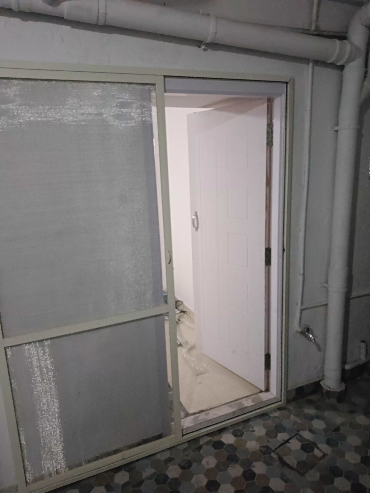

Aluminium & uPVC Window Repair in Bangalore
Kutbi Aluminium Glass & Hardware focuses on practical repair work for sliding windows and doors: rollers, wheels, handles, locks, rubber beading, alignment and related hardware. We also provide broken glass replacement, mosquito mesh and pigeon net services.
Window repair services
Aluminium Sliding Window Repair
Repair for jammed, noisy or difficult aluminium sliding windows.
View serviceMore services from Kutbi
Repair before replacement
- Inspection-led repair for common sliding-window problems.
- Aluminium and uPVC window and door hardware support.
- Roller, wheel, handle, lock and rubber-beading replacement where compatible.
- Repair-focused service across many Bangalore neighbourhoods.
- Existing frames can often be retained when the condition allows.
Need a repair?
Share photos and your location on WhatsApp for an initial discussion.
WhatsApp KutbiFor exact parts, measurements and replacement suitability, site inspection may be required.
Kutbi project work





Areas served
Kutbi serves Bannerghatta Road, Gottigere, Arekere, JP Nagar, Jayanagar, BTM Layout, Begur, Electronic City, HSR Layout, Koramangala, Whitefield, Sarjapur, Kudlu Gate, Marathahalli, Basavanagudi, Defence Colony, Indiranagar, Akshaya Nagar, Lakshmi Layout, Arekere MICO Layout 2nd Stage, Hulimavu, Kothnur, Kalena Agrahara, Bommanahalli, Domlur, Bannerghatta and nearby Bangalore areas.